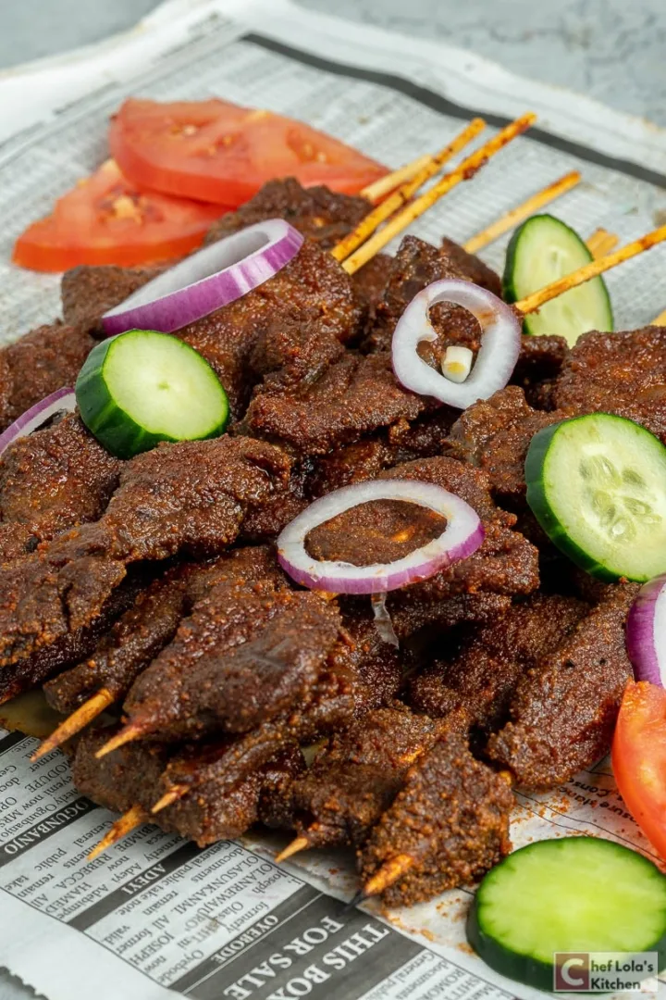

Suya

Description
This recipe will show you how to make Nigerian Suya easily. This is one of the most popular kebabs you can find on the streets of Nigeria. It is a very popular evening snack sold by roadside vendors.
Ingredients
- Beef
- Yaji spice
- Oil
- Salt
- Bouillon
- cayenne pepper
Steps
- Before you start, be sure to soak your skewers in water for at least 30 minutes. If you plan to grill outdoors, it’s best to soak overnight.
- The preparation of suya always begins with the meat. Be sure to slice the meat as thinly as you can. I always tell my butcher to do that for me. Then I cut it into small pieces before marinating it.
- Also, depending on the cut of meat I choose, I sometimes tenderize before cooking, so make the meat a little tender.
- Next, I season the beef with salt, bouillon, and a bit of cayenne pepper. Add the oil and mix well, then cover and leave in the refrigerator to marinate for at least one hour. You can as well leave overnight. This will allow for better flavor absorption.
- Thread the meat onto skewers, about 4 to 5 pieces on each skewer, making sure that each piece of meat is touching the other pieces (this will help keep them from drying out).
- Put the yaji spice ( a little at a time) in a pan or bowl big enough to accommodate the skewered beef, then place the meat on the plate to coat the two sides with the spice.
- Once all the skewered meat are well coated, arrange them on a wire rack placed over a large tray and roast in the oven.